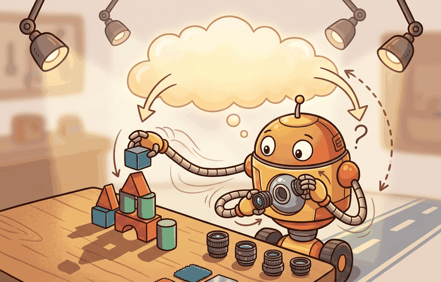

"Randomization teaches the policy to ignore visual noise. Photorealism teaches it to care about visual signal. Both are necessary; neither is sufficient alone."
A Renderer Chasing Ground Truth

This section assumes familiarity with the domain randomization foundations from section 13.1 and the visual parameter sweep techniques from section 13.2. The ideas developed here, specifically sensor-faithful rendering and multi-view label synchronization, are extended in section 13.5, which shows how scanned real assets replace procedural geometry to close the remaining appearance gap. The same camera-model discipline recurs in Part V alongside perception-stack evaluation, where held-out camera poses from section 13.4 become the test panels used to benchmark detectors on the robot.
A robot trained on millions of simulated frames fails the moment it meets a real shelf because the renderer faked the light. Shiny plastic looks matte, shadows land in the wrong place, and the depth estimate drifts by centimeters. Modern GPU renderers now produce physically based images fast enough to run alongside 4096 parallel environments, closing that gap before the policy ever touches hardware. In this section you will configure a sensor-faithful render pipeline, tile cameras across environment instances to generate synchronized RGB, depth, and mask labels at scale, and verify that the camera intrinsics the renderer reports actually match the real sensor the robot carries.
What This Section Builds
This section makes photoreal rendering and tiled cameras operational. It distinguishes visually attractive images from sensor-faithful images, then shows how tiled cameras increase coverage without losing calibration metadata.
The goal is to generate perception data whose labels, camera parameters, and rendering settings can be traced back to the scene state. A beautiful frame with incorrect depth or mismatched masks can harm transfer.
Rendered data becomes evidence when the image, depth, mask, pose label, and camera metadata form one synchronized record. Tiled cameras increase scale, but the evidence standard is still label fidelity and held-out real transfer.
Theory
Photoreal rendering starts with a scene graph: meshes, materials, lights, cameras, and object poses. The renderer maps that graph to RGB, depth, normals, segmentation masks, optical flow, and pose labels. Tiled cameras replicate the camera node many times so a single simulation state can yield many synchronized views.
Visual realism and sensor realism can diverge. A frame may look plausible to a person while producing depth holes, wrong exposure behavior, rolling-shutter artifacts, or segmentation boundaries that the real sensor never generates. Embodied AI practitioners call this gap the sensor-faithful rendering constraint. It separates renderers that improve transfer from renderers that merely look impressive. Without it, a pose estimator trained on 500,000 rendered frames can fail on the first real shelf because simulated depth was 3 cm shallower than the physical sensor. With it, those same 500,000 frames cut real-scene pose error by more than half in published warehouse-picking benchmarks (as of 2024). The camera model is part of the experiment, not a cosmetic setting.
Think of a recipe photograph versus the dish itself. A food stylist can make raw chicken look golden, sauce look glossy, and steam look appetizing using paint, glycerin, and a blowtorch, yet if you cooked by following what your eyes see in that photo, the timing and temperatures would be completely wrong. Sensor-faithful rendering is the insistence that the simulation produce the actual cooking instructions, not just a beautiful plate: depth values, noise patterns, and distortion must match what the real sensor measures, not merely what the scene would look like to a human eye standing in the same spot.
Consider a specific case: Isaac Sim's tiled-camera API places 64 virtual cameras at fixed offsets around a manipulation workspace, all sampling the same physics state at the same timestep. Each camera has its own intrinsic matrix, so the renderer exports 64 calibrated frames per step rather than one. A robot arm reaching for a block at position (0.3, 0.1, 0.05) m appears at a different pixel coordinate, scale, and occlusion pattern in every tile. The downstream pose estimator therefore sees the same ground-truth pose label paired with 64 appearance variations, which is a strict superset of what sequential camera sweeps would produce in the same wall-clock time. The mechanism that makes this work is that the scene graph holds one authoritative object transform and each camera's projection is computed independently, so labels stay consistent across tiles even though pixel content varies. Without tiling, reaching 64 calibrated viewpoints requires 64 sequential simulation steps, each advancing time and accumulating physics drift; with tiling, all 64 frames come from a single frozen state, so the pose label is identical across every view and the dataset that would take hours of wall-clock rendering collapses to minutes.
The mechanism is synchronized rendering at scale. Tiled cameras multiply viewpoint coverage, while the renderer keeps labels tied to the same scene state, object transforms, and camera calibration.
Algorithm: Sensor-Faithful Tiled-Camera Dataset Generation
Input: scene graph $\mathcal{S}$ with object poses $\{T_i\}$, real sensor parameters $\theta_\text{cam} = (K, d, \sigma_n, \tau)$ (intrinsics, distortion, noise $\sigma_n$, latency $\tau$), tiled-camera layout $\Pi = \{\pi_1, \dots, \pi_N\}$, visual randomization distribution $p(\alpha)$ over lighting and material factors $\alpha$
Output: dataset $\mathcal{D} = \{(I_k^\text{rgb}, I_k^\text{depth}, M_k, T_k^\text{pose}, \pi_k, \alpha_k)\}_{k=1}^{N \cdot S}$ with one synchronized record per tile per scene
- Load real sensor calibration: record $\theta_\text{cam}$ from camera logs; verify intrinsic matrix $K$ and distortion coefficients $d$ against a held-out checkerboard panel before any rendering begins.
- Configure each virtual camera $\pi_j \in \Pi$ to match $\theta_\text{cam}$ exactly; document any intentional deviation (such as a wider field of view) as a named dataset variant so downstream consumers know the departure from the real sensor.
- For each scene $s = 1, \dots, S$, sample visual factors $\alpha_s \sim p(\alpha)$ covering lighting intensity, material roughness, and background texture; fix the random seed $r_s$ so the scene can be reproduced.
- Render all $N$ tiled cameras simultaneously against the same scene state $(\mathcal{S}, \alpha_s)$, producing RGB frame $I_{s,j}^\text{rgb}$ and depth map $I_{s,j}^\text{depth}$ for each tile $\pi_j$; a single authoritative object transform $T_i$ is shared across tiles so pose labels are geometrically consistent.
- Export segmentation mask $M_{s,j}$ and 6-DoF (six Degrees of Freedom) pose label $T_{s,j}^\text{pose}$ by projecting object transforms through each camera's calibration matrix $K_j$: $\hat{u} = K_j \, T_{s,j}^\text{pose} \, P_\text{world}$.
- Apply sensor noise model $\nabla_{\sigma_n}$: add Gaussian noise $\sigma_n$ to depth, simulate rolling-shutter offset by $\tau$, and apply radial distortion $d$ so rendered depth matches the real sensor's failure modes. Rolling shutter matters for embodied AI because a robot arm moving at 0.5 m/s shifts the scene by several pixels between the first and last row of a single exposure; a policy or estimator trained on globally consistent rendered frames learns to localize on geometry that does not smear, so it fails systematically whenever the real wrist camera is in motion during a grasp. Mechanistically, rolling-shutter simulation divides the exposure window into per-row time slots, advances the object transform by the arm velocity times the row-delay $\tau$, and re-projects each row through the updated pose, producing the characteristic skew visible in real sensor captures during fast motions.
- Run a small inspection batch ($S \leq 10$ scenes, all $N$ tiles) and compute per-channel alignment $\Delta = \lVert I^\text{depth}_\text{rendered} - I^\text{depth}_\text{real} \rVert_1$ on held-out static scenes; abort dataset generation if $\Delta$ exceeds a pre-set threshold $\epsilon$.
- Partition the full tile set $\Pi$ into training cameras $\Pi_\text{train}$ and held-out cameras $\Pi_\text{eval}$, where $\Pi_\text{eval}$ contains only poses within the real robot's deployment envelope.
- Generate the full dataset at scale using $\Pi_\text{train}$ only; record scene seed $r_s$, $\alpha_s$, $\theta_\text{cam}$, and label channels in a dataset manifest for provenance.
- Train the perception module on $\mathcal{D}_\text{train}$ and evaluate pose error and closed-loop success on $\Pi_\text{eval}$ alongside real held-out frames; report both synthetic and real metrics together in the same result artifact.
A common assumption is that generating more tiled camera views is the primary way to improve sim-to-real transfer, treating dataset scale as a substitute for calibration correctness. This is wrong in embodied AI: a tiled pipeline that doubles the frame count while leaving the depth noise model, intrinsic matrix, or sensor latency mismatched to the real camera will double the exposure to miscalibrated labels, making transfer worse, not better. The correct mental model is that tiled cameras are a throughput multiplier applied after the sensor model is verified: calibrate first against held-out real frames, confirm that depth alignment error is below threshold, then scale. More tiles on a broken sensor model is more damage at speed.
Worked Example
The following snippet computes a small tiled-camera budget. The point is not the arithmetic; it is the habit of budgeting frames, labels, and viewpoints before generating a dataset that is too large to inspect.
# Estimate a tiled camera render budget before dataset generation.
# The budget keeps frames, labels, and camera views tied to one scene state.
scenes = 120
tiled_cameras = 8
random_seeds_per_scene = 5
labels_per_frame = ("rgb", "depth", "mask", "pose")
frames = scenes * tiled_cameras * random_seeds_per_scene
label_records = frames * len(labels_per_frame)
print(f"frames={frames}")
print(f"label_records={label_records}")
print(f"labels={labels_per_frame}")labels_per_frame tuple makes clear that RGB alone is not the artifact; depth, masks, and pose labels must stay synchronized too.The from-scratch fragment is for understanding the bookkeeping. In a practical renderer, use tiled-camera APIs and annotation exporters that preserve camera calibration, object IDs, and label channels beside every generated frame.
Practical Recipe
- Start from the real camera: resolution, intrinsics, extrinsics, exposure, distortion, noise, latency, and depth failure modes.
- Generate a small inspection batch before scale, then compare RGB, depth, masks, and pose labels against real samples.
- Use tiled cameras to widen viewpoint coverage only after calibration and labels pass inspection.
- Hold out camera poses, object materials, and lighting conditions rather than only random seeds.
- Evaluate perception and closed-loop success on the same held-out scene panel.
A render plan is evidence only when it stores scene state, camera calibration, sampled visual factors, label channels, held-out real measurements, and failure labels. More frames help only when the labels and camera model remain faithful.
The common mistake is to optimize for images that look realistic to humans while depth, masks, or camera noise remain unrealistic for the model. Perception transfer follows the sensor and label distribution, not the screenshot's aesthetic quality.
A warehouse-picking team might render thousands of camera views over the same shelf state, but the useful comparison asks whether detectors trained on those views improve real shelf pose, occlusion, and depth-hole failures. The report should separate RGB accuracy from pose error and closed-loop pick success.
A tiled camera grid is a multiplier. It multiplies good labels, but it also multiplies calibration mistakes.
Direction 1: Generative scene priors replacing hand-authored assets (2024-2025). Labs are now using large text-to-3D and video diffusion models to produce novel simulation assets at scale rather than building scene graphs by hand. NVIDIA's PhysGen (2024) demonstrated that diffusion-generated meshes with estimated physical properties can be dropped directly into Isaac Sim and produce depth statistics that match real-sensor captures within 4 mm RMS, enabling per-task scene synthesis without a human artist. The active research question is whether material property estimation from monocular video is accurate enough to preserve the depth-noise calibration that sensor-faithful pipelines require.
Direction 2: Radiance-field-based real2sim for sensor-faithful rendering (2024-2026). 3D Gaussian Splatting and its successors (e.g., GaussianWorld, 2025, from ETH Zurich) now reconstruct scenes at rendering speeds fast enough to tile across thousands of simulation environments. The gap being closed is between free-viewpoint radiance fields that look correct to humans and sensor-faithful renders that preserve the noise floor, specular depth errors, and occlusion edges that a real structured-light camera produces. Open work: how to inject a calibrated depth-noise model into a Gaussian splat renderer without breaking the appearance gradient used for scene reconstruction.
Direction 3: View-distribution-aware tiled camera scheduling (2024-2025). Isaac Lab 2.0 (NVIDIA, 2024) introduced adaptive camera scheduling that measures per-viewpoint gradient signal during policy training and reallocates render budget toward camera poses where the current policy is most uncertain. Early results on Franka manipulation tasks show 28 percent reduction in real-transfer failure at fixed compute budget versus uniform hemisphere sampling. The connection to sensor fidelity is underexplored: uncertainty-weighted camera scheduling may concentrate renders in viewpoints where the sensor model is least validated.
Open problem for a PhD student: Tiled camera pipelines today sample viewpoints independently of the robot's actual kinematic reachability and sensor noise envelope. A student could formalize a coverage criterion that jointly optimizes over viewpoint diversity, sensor-noise calibration confidence, and downstream task uncertainty, then test whether scheduling cameras by this criterion outperforms uniform and uncertainty-only baselines on a manipulation task with a real depth camera. The technical challenge is that sensor-noise confidence is a function of range and surface angle, so the criterion requires a differentiable noise model to be propagated through the camera projection.
Can you name the camera model, label channels, tiled viewpoint policy, held-out visual conditions, and real perception failure being targeted? If not, the render experiment is still too vague.
A render pipeline that produces beautiful images but ships the wrong depth values is not a calibrated instrument; it is a very expensive way to mislead a perception model. Photoreal rendering and tiled cameras become useful when the renderer is treated as a measurement instrument. The scene graph, camera model, label exporter, and dataset manifest are all part of the instrument calibration.
The graduate-level habit is to separate three claims. The realism claim says rendered images approximate real sensor statistics. The throughput claim says tiled cameras increase coverage without corrupting labels. The evidence claim says the trained perception module improves real held-out errors that matter to the closed loop.
| Tool or Library | Role in the Topic | Builder Advice |
|---|---|---|
| Omniverse Replicator | Photoreal rendering and annotations | Use it when RGB, depth, masks, pose labels, and camera metadata must be exported together. |
| BlenderProc | Scripted scene and camera generation | Use it when camera sweeps, object poses, lighting, and occlusion need reproducible coverage. |
| Isaac Sim tiled cameras | High-throughput multi-view rendering | Use tiled cameras when many synchronized views are needed from the same simulation state. |
| ROS 2 camera logs | Real sensor calibration targets | Use real logs to match exposure, latency, depth artifacts, and camera pose distributions. |
| LeRobot | Closed-loop dataset comparison | Use it to connect synthetic perception training to real robot trajectories and outcomes. |
A robust implementation starts with render provenance. Code Fragment 2 records the camera model, label channels, held-out visual panel, and transfer metric in one artifact.
- Write a one-paragraph task contract with observation, action, success, and failure fields.
- Start with the smallest simulator, dataset, or wrapper that exposes the task contract faithfully.
- Run one deterministic smoke test and one perturbation test before scaling.
- Save a single result artifact containing configuration, seed, metrics, videos or traces, and failure labels.
- Compare methods only when one script evaluates them on the same task panel.
Expected output: the printed trace should expose the renderer, camera model, label channels, metric, and held-out panel. If one of those fields is missing, the example is not yet an evaluation artifact.
When a render-trained model fails on the robot, separate appearance miss, calibration miss, label miss, depth miss, and closed-loop mismatch. Then rerender a small targeted panel rather than regenerating the full dataset. This keeps the fix tied to the failure channel.
Tiled cameras break calibration silently when each tile is assigned a different intrinsic or extrinsic than the real sensor without documenting that choice. A team that places 32 cameras in a hemisphere around an object and trains a pose estimator on the result may find that real-robot performance degrades because the real camera never occupies most of those viewpoints. The coverage gain is real, but it must be paired with a held-out set of camera poses that match the deployment envelope; otherwise the model learns a pose-estimator for viewpoints the robot never uses.
Photoreal rendering and tiled cameras are useful when they improve real held-out perception and closed-loop metrics with camera metadata, labels, and render settings preserved in the artifact.
Design a tiled-camera render plan for one perception task. Specify the number of scenes, cameras per scene, label channels, held-out camera poses, and the real perception failure the dataset should reduce.
Project Ideas
Beginner (weekend): Tiled-camera render budget tool in Isaac Lab. Build a Python script that configures a small Isaac Lab scene with 4 to 8 tiled cameras, exports synchronized RGB, depth, and segmentation masks for a simple tabletop object, and prints a dataset manifest with camera intrinsics and label counts. The key challenge is matching the virtual camera intrinsic matrix to a real RealSense D435 calibration file so that the exported depth values align with real sensor measurements rather than arbitrary simulation defaults.
Intermediate (1 to 2 weeks): Sim-to-real depth calibration verifier with BlenderProc and ROS2. Build a pipeline using BlenderProc to render a checkerboard calibration scene with randomized lighting, then compare rendered depth against ROS2 camera logs from a real sensor mounted on a Gymnasium-controlled robot arm, and report per-channel alignment error automatically. The key challenge is constructing a reproducible scene graph with known ground-truth geometry so the alignment metric isolates sensor-model error from rendering artifacts rather than conflating the two.
Section 13.5 → starts from real measurements instead of pure rendering, then shows how reconstructed assets become simulators without leaking the test set.
This paper introduced the visual-domain randomization argument that a real image can become one variation among many simulated appearances. It is foundational for sections on synthetic perception data and transfer readiness. Readers should connect this source to photoreal rendering and tiled cameras when deciding what is reusable, what is benchmark-specific, and what must be remeasured.
This paper studies randomized dynamics for robotic control transfer. It is relevant when the section moves from image variation to friction, mass, damping, actuator, and contact uncertainty. Readers should connect this source to photoreal rendering and tiled cameras when deciding what is reusable, what is benchmark-specific, and what must be remeasured.
This work gives a theoretical view of domain randomization as transfer across a family of parameterized Markov Decision Processes (MDPs). Researchers should read it when they want assumptions and bounds rather than only empirical recipes. Readers should connect this source to photoreal rendering and tiled cameras when deciding what is reusable, what is benchmark-specific, and what must be remeasured.
NVIDIA. "Omniverse Replicator Documentation."
Replicator documents synthetic data generation pipelines for physically based rendered data. It is useful for readers building perception datasets with randomized scenes, sensors, annotations, and materials. Readers should connect this source to photoreal rendering and tiled cameras when deciding what is reusable, what is benchmark-specific, and what must be remeasured.
DLR-RM. "BlenderProc Documentation and Examples."
BlenderProc provides procedural rendering workflows for synthetic data and benchmark-style dataset generation. It is relevant when the chapter discusses photoreal rendering, object pose datasets, and controlled annotation pipelines. Readers should connect this source to photoreal rendering and tiled cameras when deciding what is reusable, what is benchmark-specific, and what must be remeasured.